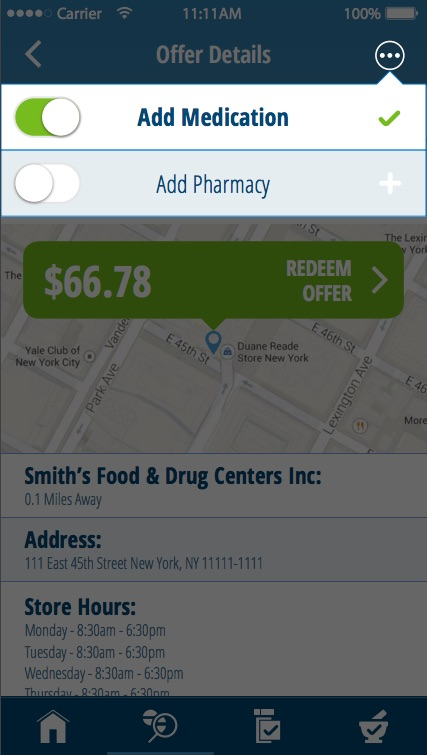

Inspired by a Google I/O talk, I decided to leverage some of Android's Data Binding capabilities when building out a new feature in our OneRx application. Result: I loved it.
Android Data Binding
Google I/O 2016 had a great talk on the latest features in Android Data Binding:
Advanced Data Binding.
I highly recommend watching it. The summary is that it covered Data Binding
features including two-way data binding, method references, and lambdas.
These features let developers bind UI fields to data objects in layout files alone,
without any code. Additionally methods and lambdas (simple functions) can be
called from within the layout files as a result of user action (for example onClick:).
I know I'm not alone in the frustration of how much boilerplate / glue code there is in Android when writing UI classes. First you have to use findViewById to find the view, then set its state, then add a clickListener to handle its events. Then, if your model data changes, you have to update the view's state.
The promise of Data Binding is to minimize the amount of glue and boilerplate code. The I/O talk was compelling and convincing, so I decided to try out these ideas in a new feature I was writing for our OneRx Android app.
The task at hand
My task was to create a contextual menu that would be triggered by an action button click:
The feature is simple. There are one or two views that appear as a popup, that track the "is favorite" state of the result drug and/or pharmacy. Whenever a user toggles the switch the "is favorite" state should toggle locally and call our API to set the new state on the server.
Our concern here is how to track the "is favorite" state, update the view to reflect the current state, and trigger the API call. For the sake of discussion let's simplify the problem and just concern ourselves with a single view (Add Medication).
This is not the code you are looking for
Let's try it the old way first. We need to link the model to the UI and handle the actions. We'll use a Fragment to control the view for our example. First let's make the layout file:
<?xml version="1.0" encoding="utf-8"?>
<RelativeLayout
xmlns:android="http://schemas.android.com/apk/res/android"
android:layout_width="match_parent"
android:layout_height="wrap_content"
android:background="@drawable/white_with_blue_border">
<Switch
style="@style/Switch"
android:id="@+id/switch_favorite"
android:padding="@dimen/padding_regular"
android:layout_width="wrap_content"
android:layout_height="wrap_content"
android:layout_centerVertical="true"
android:layout_alignParentLeft="true" />
<TextView
android:id="@+id/label_title"
android:layout_width="wrap_content"
android:layout_height="wrap_content"
android:layout_centerInParent="true"
android:textColor="@color/blue"
android:textSize="@dimen/font_size_xlarge"
android:padding="@dimen/padding_regular"
android:text="Add Favorite"/>
<ImageView
android:id="@+id/image_check"
android:layout_width="wrap_content"
android:layout_height="wrap_content"
android:layout_centerVertical="true"
android:layout_alignParentRight="true"
android:padding="@dimen/padding_regular"
android:src="@drawable/context_icon_check" />
</RelativeLayout>

Then in our fragment, we have to inflate the layout and get references so all the subviews, and set listeners on the view and the switch.
public class TestFragment extends Fragment {
@Nullable
private Switch mSwitch;
@Nullable
private TextView mTitleLabel;
@Nullable
private ImageView mImageView;
@NonNull
// Could be injected or from intent or whatever.
private FavoriteDrugModel mDrugModel;
@Override
public View onCreateView(LayoutInflater inflater, ViewGroup container, Bundle savedInstanceState) {
View view = inflater.inflate(R.layout.context_menu_popup_menu, container, false);
mSwitch = (Switch)view.findViewById(R.id.switch_favorite);
// Handle switch changes to change the favorited state
mSwitch.setOnCheckedChangeListener(new CompoundButton.OnCheckedChangeListener() {
@Override
public void onCheckedChanged(CompoundButton buttonView, boolean isChecked) {
setIsFavorite(isChecked);
}
});
// Find the title label and image view so we can change their state on model state change.
mTitleLabel = (TextView) view.findViewById(R.id.label_title);
mImageView = (ImageView) view.findViewById(R.id.image_check);
// Update UI to reflect current model state
updateUI();
return view;
}
...
updateUI method too,
to handle showing the right state:
private void updateUI() {
if (mSwitch != null) {
mSwitch.setChecked(mDrugModel.getIsFavorited());
}
if (mTitleLabel != null) {
if (mDrugModel.getIsFavorited()) {
mTitleLabel.setTypeface(boldTypeFace);
} else {
mTitleLabel.setTypeface(lightTypeFace);
}
}
if (mImageView != null) {
if (mDrugModel.getIsFavorited()) {
mImageView.setImageResource(R.drawable.context_icon_check);
} else {
mImageView.setImageResource(R.drawable.context_icon_plus);
}
}
}
An Elegant Weapon for a More Civilized Age
Data-binding is our weapon against unneeded code. We can remove the glue code
by providing the model object to the layout xml file. In xml we can use the
model state to determine how the UI should look. As per the
Android developer documentation,
first the layout must be wrapped in a <layout> tag. Then,
the data model can be provided to the layout via a <data><variable> tag.
The variable name is what we want to use in the layout file to reference it,
and its type is the class it is.
Note: If we wanted to set the view's visibility, or anything else that depends
on an import, we can use <import> to access it.
E.g.<import type="android.view.View"/>
To use data binding on a view, all we need to do is use "@{}".
So, inside our RelativeLayout, our background can be set based on the isFavorited state:
android:background="@{favoriteDrug.isFavorited ? @drawable/white_with_blue_border : @drawable/unselected_blue_with_border}">Inside the TextView, it's font is set based on the isFavorited state also:
android:src="@{favoriteDrug.isFavorited ? @drawable/context_icon_check : @drawable/context_icon_plus}"The real magic is the "@{}" with "@={}".
The switch in our layout therefore looks like this:
android:checked="@={favoriteDrug.isFavorited}"We can now update our fragment code to use the binding. You can see the other
wonderful side-effect of binding is not needing to use findViewById nor needing
to cast.
We can also completely remove our updateUI method. Any change to the model
will automatically update the layout.
The class now looks like this:
public class TestFragment extends Fragment {
// Could be injected or from intent or whatever.
private FavoriteDrugModel mDrugModel;
@Override
public View onCreateView(LayoutInflater inflater, ViewGroup container, Bundle savedInstanceState) {
ContextMenuFavoritableItemBinding binding = DataBindingUtil.inflate(inflater, R.layout.context_menu_popup_menu, container, false);
View view = binding.getRoot();
Switch mSwitch = binding.switchFavorite;
// Handle switch changes to change the favorited state
mSwitch.setOnCheckedChangeListener(new CompoundButton.OnCheckedChangeListener() {
@Override
public void onCheckedChanged(CompoundButton buttonView, boolean isChecked) {
setIsFavorite(isChecked);
}
});
return view;
}
private void setIsFavorite(boolean isFavorite) {
// Here we would do the API call here and get the response. Just pretend.
boolean newFavoriteState = isFavorite;
mDrugModel.setIsFavorited(newFavoriteState);
}
}
Isn't that much better?
As you can see a DataBinding class is automatically created from our layout
definition, which provides a setter for our favoriteDrug object, and
also getters for all the views in the layout (based on their ids).
binding.getRoot() returns the root view of the layout.
For now, we still need the onCheckedChangeListener to be set, because
although changing the switch checked state will update our model, it won't
trigger the API call.
There was one surprise for me, which was that if I toggled the
switch in my UI, the model state would change, but the other UI elements
that were also bound to that model, would not change. In order to make
all bound UI elements refresh, I had to update my model slightly.
Calling notifyPropertyChanged ensures all the bound UI elements
would refresh.
public class FavoriteDrugModel extends BaseObservable
...
public void setIsFavorited(boolean isFavorited) {
mIsFavorited = isFavorited;
// Need to notify property changed because multiple UI actions can
// cause the state to change, not just a single element.
notifyPropertyChanged(BR.isFavorited);
}
Is that all?
We can do still better. Instead of having to set the change listener for the switch, and call our method there, we can set the method to call inside our layout xml file. We do have to be careful not to insert business logic into our layout. The layout should only concern itself with UI. But, there's no reason we need the glue code if we can just set the checkedChanged handling in the layout. By providing our class as another variable into the layout, we can call methods on it, either by method reference or by lambda. I like the lamdba mechanism since it lets me provide whatever parameters I want to the method. We update our switch element in the xml like this:
android:onCheckedChanged="@{()->presenter.switchChanged(!favoriteDrug.isFavorited)}"Now our fragment code is much better. The view logic is declarative (inside the layout xml). The model is two-way data bound, and our API call would take care of the business logic outside of our fragment.
public class TestFragment extends Fragment {
// Could be injected or from intent or whatever.
private FavoriteDrugModel mDrugModel;
@Override
public View onCreateView(LayoutInflater inflater, ViewGroup container, Bundle savedInstanceState) {
ContextMenuFavoritableItemBinding binding = DataBindingUtil.inflate(inflater, R.layout.context_menu_popup_menu, container, false);
return binding.getRoot();
}
private void switchChanged(boolean newOnValue) {
// Here we would do the API call here and get the response. Just pretend.
boolean newFavoriteState = newOnValue;
// Even though the model was updated before, set it here in case the API call fails.
mDrugModel.setIsFavorited(newFavoriteState);
}
}
Conclusion
I'm pretty impressed with the amount of code I no longer need thanks to Android's Data Binding features. As long as you make sure you use it for what it is (moving glue code from view class to layout) and not try to do bad things with it (triggering API calls from within your layout), it's a good tool. It's definitely something I'll continue to use moving forward for my views and layouts.